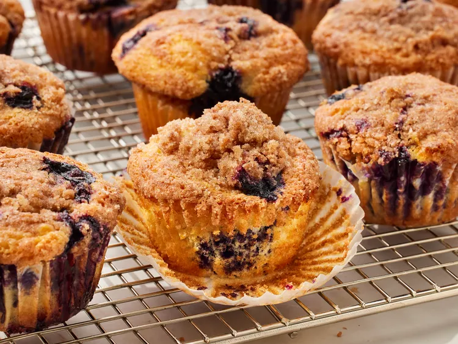

Gather all ingredients.

Preheat the oven to 400 degrees F (200 degrees C). Grease 8 muffin cups or line with paper liners.
To make the muffins: Whisk flour, sugar, baking powder, and salt together in a large bowl.
Pour oil into a small liquid measuring cup. Add egg and enough milk to reach the 1-cup mark; stir until combined.
Pour into flour mixture and mix just until batter is combined. Fold in blueberries; set batter aside.
To make the crumb topping: Combine sugar, flour, butter, and cinnamon in a small bowl. Mix with a fork until crumbly.
Spoon batter into the prepared muffin cups, filling right to the top. Sprinkle with crumb topping.
Bake in the preheated oven until a toothpick inserted in the center of a muffin comes out clean, 20 to 25 minutes.
